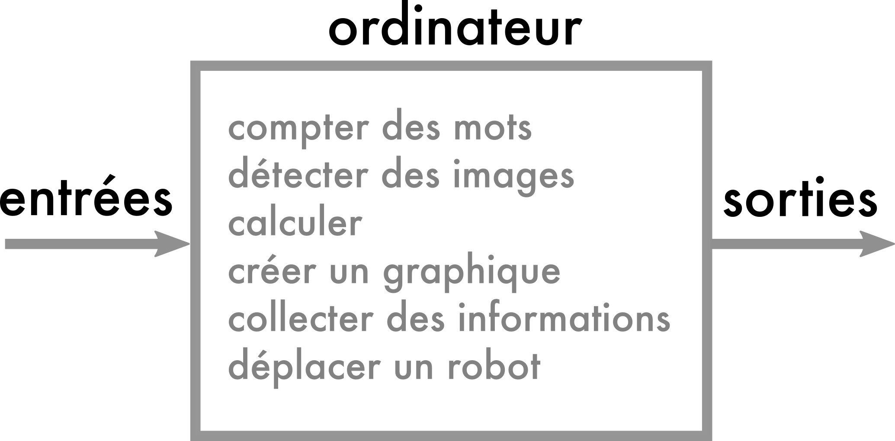
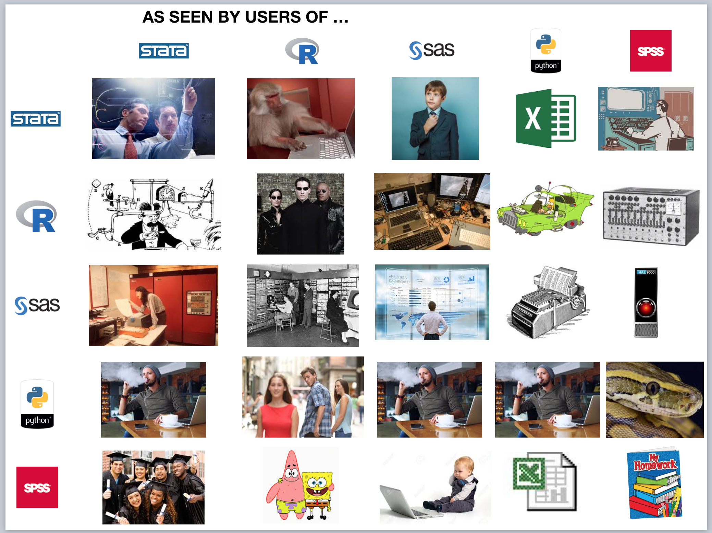
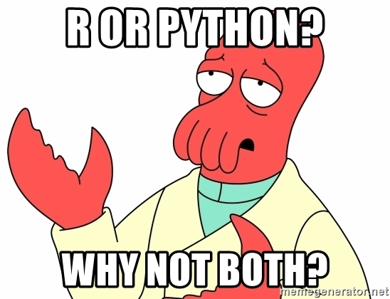
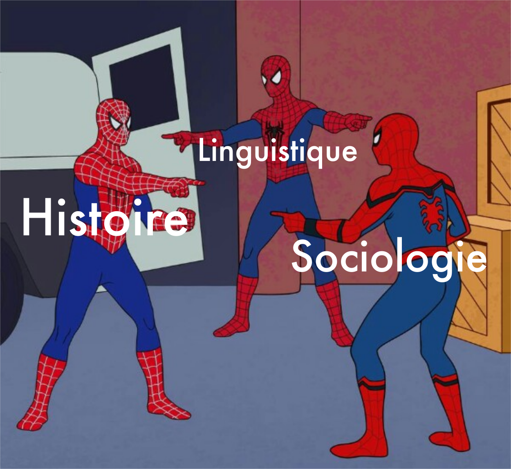
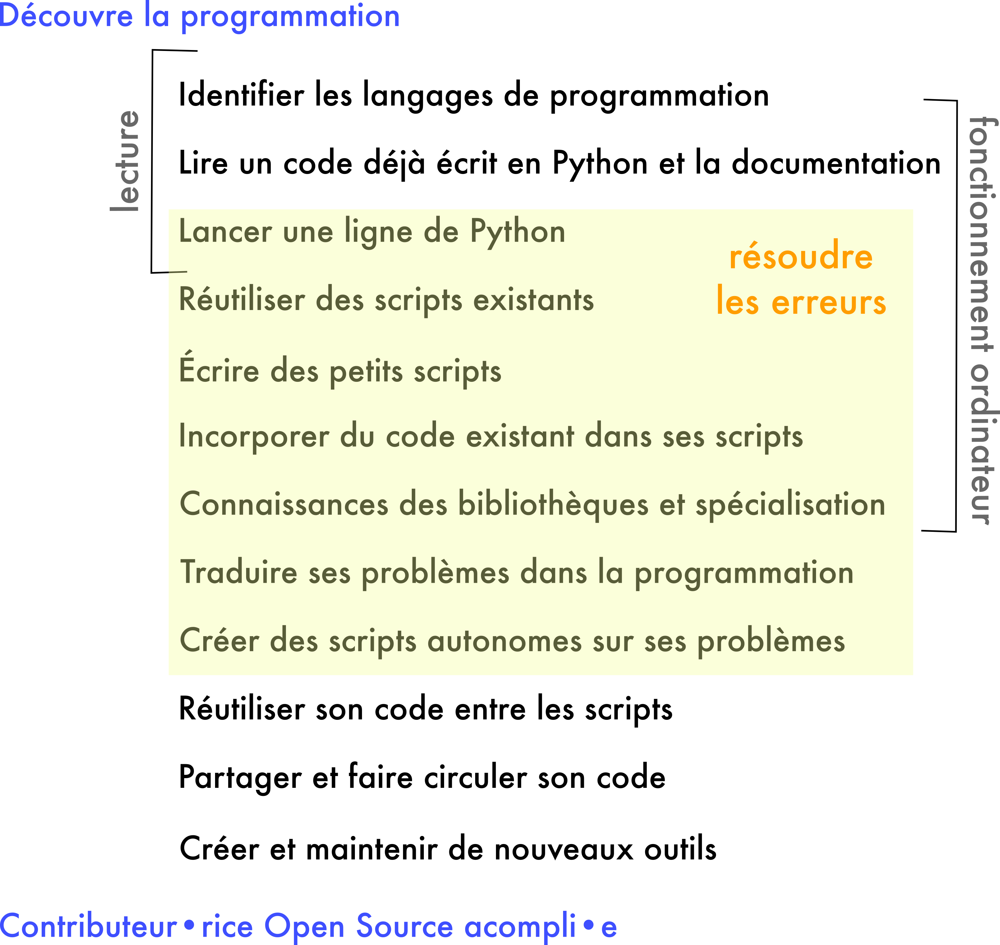
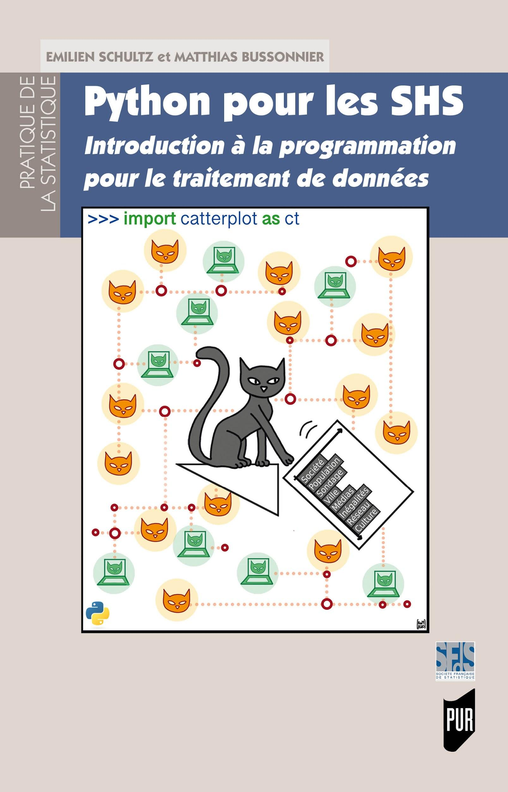
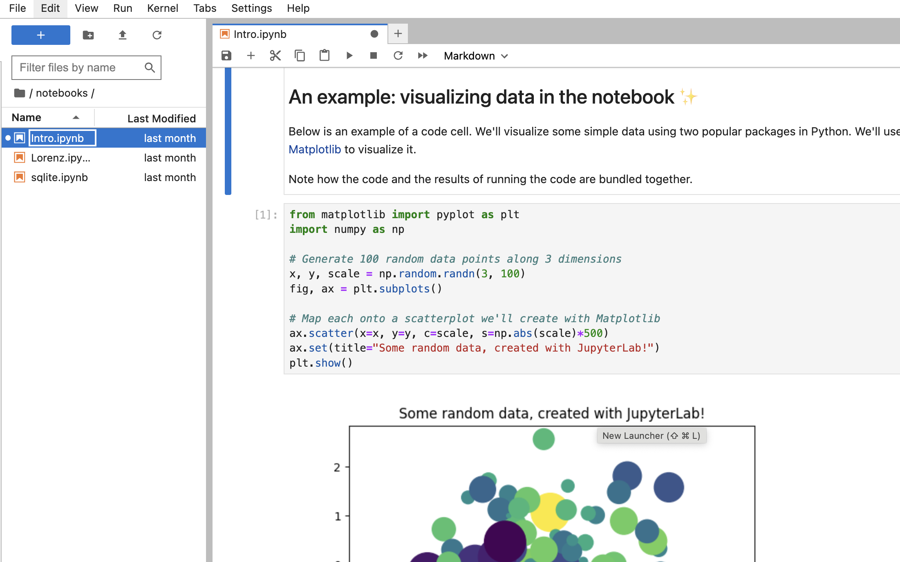

Maintenant : exécutons des scripts
- un script sans dépendance que nous allons décortiquer
- une démo d’analyse de données
- une démo de construction d’un réseau
- une démo d’une petite application
Pourquoi programmer en Python ?
2024-04-08
Dépôt Github : https://github.com/pyshs/CUSO2024
“Certains disent « Il faut coder », d’autres rétorquent « Il faut décoder »” (Cardon, 2019)
Une définition: utiliser un ensemble d’instructions (code/script) dans un langage (de programmation) pour faire réaliser (exécuter) à un ordinateur des opérations.
Pour qu’une instruction devienne une action, il faut toute une série de médiations.
Abstractions permettant d’écrire des instructions
mkdir DOSSIER crée un dossierProgrammer n’est pas forcément construire un logiciel
Choisir
« in contrast to software engineering, there is no externally specified goal or design target. Instead, the user explores and discovers their goal as they gain understanding from iteratively executing the code and thinking about the results and their data. » (Granger et Perez, 2021)
Juliette Taka, & Nicolas M. Thiéry. (2018). Publishing reproducible logbooks explainer comic strip. Zenodo. https://doi.org/10.5281/zenodo.4421040
Héritage d’une réflexion : The Origins of Python, Lambert Meertens, Inference, 2022
"It makes sense to think of the realm of programming languages as an ecosystem in which languages occupy their own niches. FORTRAN’s niche is high-performance scientific programming, involving heavy-duty numerical computation; that of COBOL is administration, based on files of data records. The C language is designed for systems programming, originally developed specifically for the Unix operating system. Just as there is no such thing as a general-purpose transportation vehicle, a truly one-size-fits-all general-purpose programming language does not exist; for a given highly specialized application domain it will always be possible to design a language tailored to, and better suited for, the specific needs of that domain [...]
Python was originally designed to serve as a high-level scripting language for the Amoeba project. ABC was completely unsuitable for this purpose; it lived in a world of its own, shielding its users—by design—from the outside world. Python was expressly designed to interface with that outside world"
Beautiful is better than ugly.
Explicit is better than implicit.
Simple is better than complex.
Complex is better than complicated.
Flat is better than nested.
Sparse is better than dense.
Readability counts.
Special cases aren’t special enough to break the rules.
Although practicality beats purity.
Errors should never pass silently.
Unless explicitly silenced.
In the face of ambiguity, refuse the temptation to guess.
There should be one– and preferably only one –obvious way to do it.
Although that way may not be obvious at first unless you’re Dutch.
Now is better than never.
Although never is often better than right now.
If the implementation is hard to explain, it’s a bad idea.
If the implementation is easy to explain, it may be a good idea.
Namespaces are one honking great idea – let’s do more of those!
Release anuelle
Une diversité d’outils adaptés à des pratiques différentes




Différents usages et besoins
Pas en une fois


Pour cela, il faut avoir Python installé

Philosophie générale de la programmation lettrée
Le notebook n’est qu’un élément
Interactive Design Environnment
Ce que ça change ?
Avantages :
Quelques limites
Si vous voulez des critiques : I don’t like notebooks.- Joel Grus
Un programme/logiciel :
Nécessité d’installer ces bibliothèques qui constituent un environnement
Vous pouvez avoir plusieurs environnements virtuels
Comment s’y mettre ?